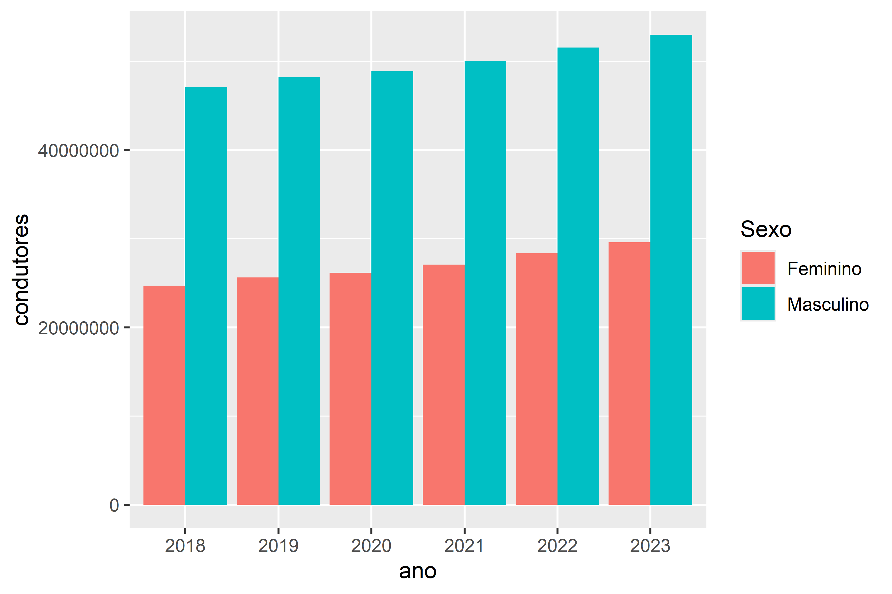
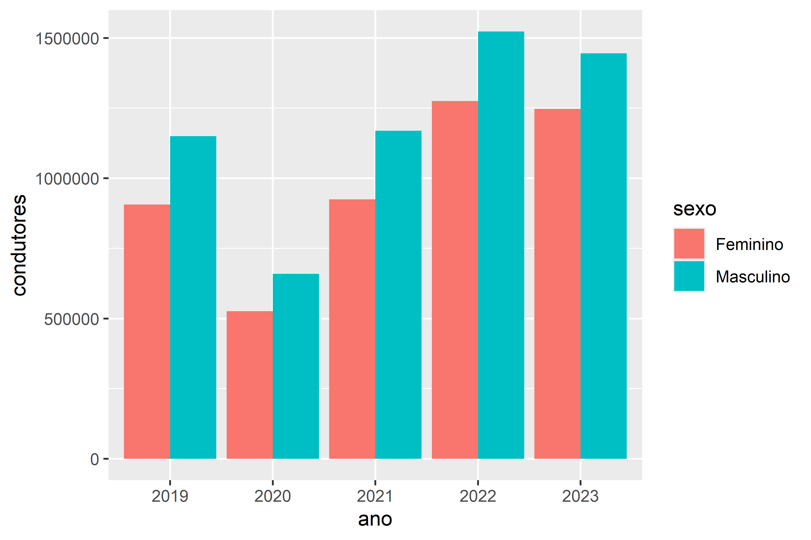
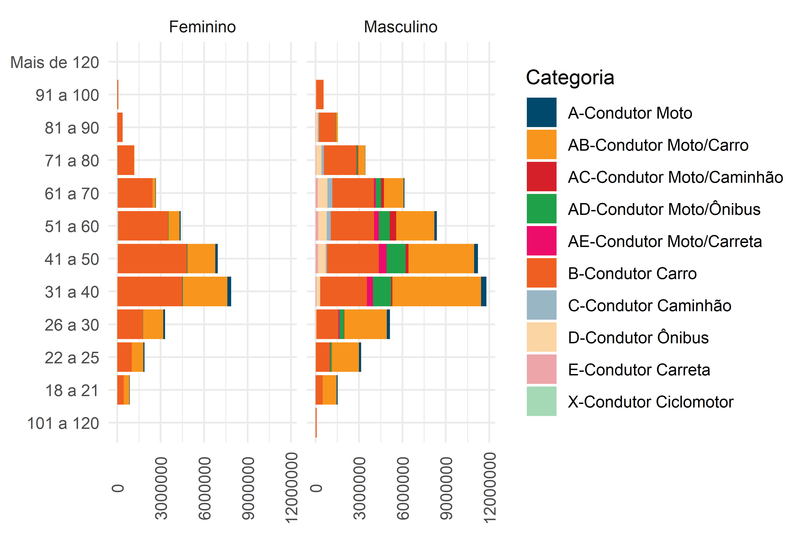
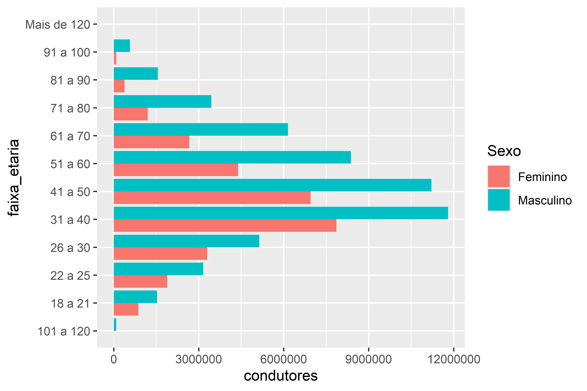
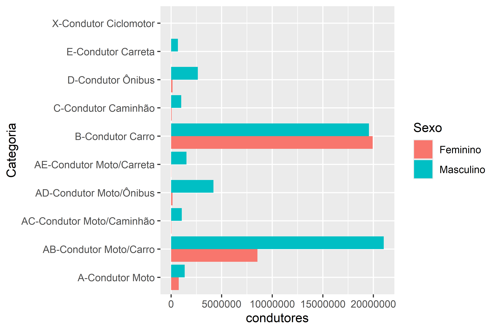

1 Introdução
O presente relatório inclui um conjunto de dados ilustrando algumas diferenças entre a presença das mulheres e dos homens no trânsito brasileiro. A seguir, a Seção 2 inclui dados sobre as vítimas fatais no trânsito brasileiro; a Seção 3 traz dados sobre a quantidade de condutores habilitados nos últimos anos e a Seção 4 apresenta dados sobre condutores envolvidos em sinistros de trânsito em rodovias federais.
Todos os dados e código utilizado nesse relatório estão disponibilizados no respectivo repositório do GitHub do Observatório.
2 Vítimas fatais
Os dados sobre as vítimas fatais no trânsito brasileiro foram extraídas do Sistema de Informações de Mortalidade (SIM) do Ministério da Saúde (2024), considerando o ano de 2022 – o último com os dados consolidados até a publicação deste conteúdo. Os dados foram coletados com auxílio do pacote microdatasus (Saldanha, Bastos, e Barcellos 2019) e armazenados pelo pacote roadtrafficdeaths (Santos e Saraiva 2023).
2.1 Pirâmide etária
O gráfico da Figura 1 a seguir apresenta a pirâmide etária das vítimas fatais no trânsito brasileiro em 2022, agrupados a partir de duas características: faixa etária e sexo da vítima.
Das 33894 vítimas fatais de 2022, 17% eram do sexo feminino. A principal faixa etária das vítimas do sexo feminino é a de idade entre 20 e 24 anos, com 568 óbitos.
2.2 Modo de transporte e faixa etária
Os gráficos da Figura 2 e Figura 3 apresentam a quantidade de vítimas fatais, com agrupamento por faixa etária e modo de transporte da vítima. Considerando as vítimas do sexo feminino, o principal grupo de vítimas são as ocupantes de motocicleta com idade entre 20 e 24, somando uma quantidade de 245 óbitos. Outro grupo de destaque são as ocupantes de automóvel entre 25 e 34 anos e as pedestres acima de 60 anos de idade.
3 Condutores habilitados
Fonte: Ministério dos Transportes (2024)
3.1 Evolução



3.2 Quantidade atual



4 Condutores envolvidos em sinistros em rodovias federais
4.1 Transporte geral
| sexo | Ferido | Ileso | Óbito | Total | ObsPorTotal |
|---|---|---|---|---|---|
| Masculino | 42784 | 47191 | 3343 | 93318 | 3.582374 |
| Feminino | 6754 | 5484 | 201 | 12439 | 1.615886 |
4.2 Transporte de cargas
4.3 Transporte de passageiros
Referências
Ministério da Saúde. 2024. “Óbitos por causas externas”. https://datasus.saude.gov.br/informacoes-de-saude-tabnet/.
Ministério dos Transportes. 2024. “Registro Nacional de Condutores Habilitados”. https://www.gov.br/transportes/pt-br/assuntos/transito/conteudo-Senatran/estatisticas-quantidade-de-habilitados-denatran.
Saldanha, Raphael De Freitas, Ronaldo Rocha Bastos, e Christovam Barcellos. 2019. “Microdatasus: pacote para download e pré-processamento de microdados do Departamento de Informática do SUS (DATASUS)”. Cadernos de Saúde Pública 35 (9): e00032419. https://doi.org/10.1590/0102-311x00032419.
Santos, Pedro Augusto Borges, e João Pedro Melani Saraiva. 2023. Roadtrafficdeaths: Road Traffic Deaths Data from Brazil. Manual. https://pabsantos.github.io/roadtrafficdeaths/.